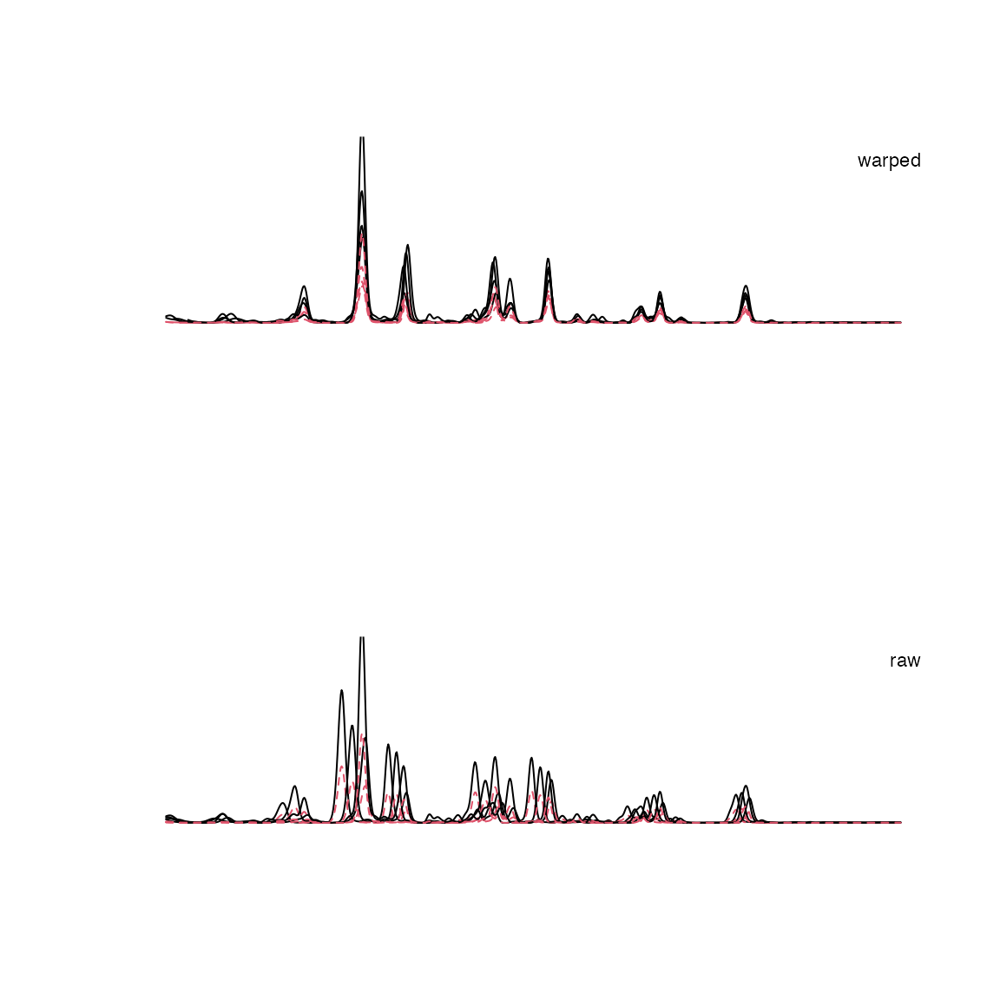
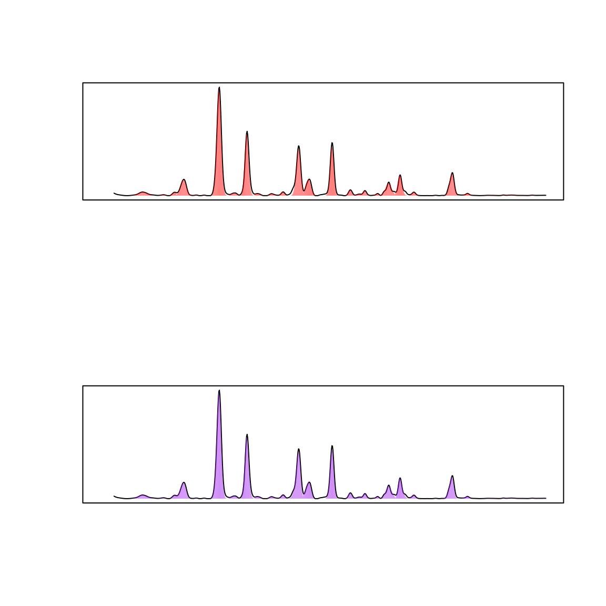
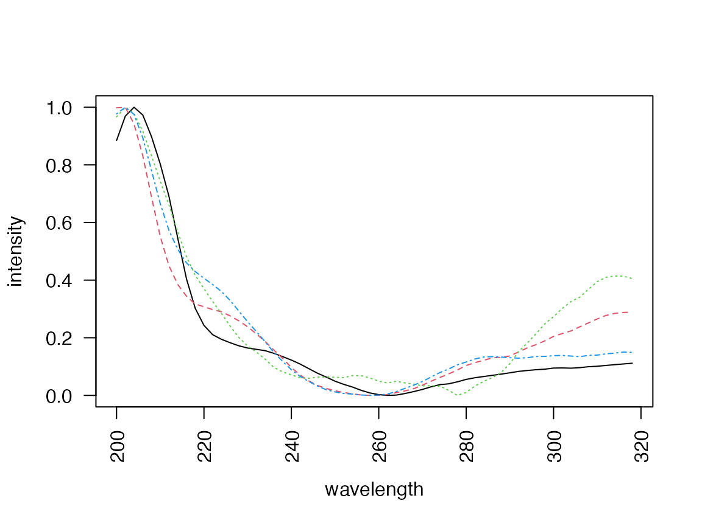

Introduction
chromatographR is a package for the reproducible analysis of HPLC-DAD data in R. Liquid chromatography coupled to diode-array detection (HPLC-DAD) remains one of the most popular analytical methodologies due to its convenience and low-cost. However, there are currently few open-source tools available for analyzing HPLC-DAD chromatograms. The use of proprietary software for the analysis of HPLC-DAD data is currently a significant barrier to reproducible science, since these tools are not widely accessible, but also because such tools often require the user to select complicated options through a graphical interface which cannot easily be repeated. Reproducibility is of course much higher in command line workflows, like chromatographR where the entire analysis can be stored and easily repeated by anyone using publicly available software.
The chromatographR package draws inspiration from the previously published alsace package (Wehrens, Carvalho, and Fraser 2015), but with improved functions for peak-finding, integration and peak table generation as well as a number of new tools for data visualization and checking. Unlike alsace, which emphasized multivariate curve resolution through alternating least squares (MCR-ALS), chromatographR focuses on a more conventional workflow that may seem more familiar to users of standard software tools for HPLC-DAD analysis. chromatographR includes tools for a) pre-processing, b) retention-time alignment, c) peak-finding, d) peak-integration and e) peak-table construction, as well as additional functions useful in analysis of the resulting peak table.
Workflow
Loading data
In most cases, the data coming from the spectrometer must first be converted into an R-accessible format such as a csv file. Once all csv files are gathered into a single directory (e.g. foo), the load_chromes function provides a simple interface to import your chromatograms.
> # single folder
> load_chroms(paths = path)
>
> # multiple folders
> path = 'foo'
> folders <- list.files(path = path, pattern = "EXPORT3D")
> dat <- load_chroms(folders)Example data
We have included some example data consisting of root extracts from tall goldenrod (Solidago altissima).
> data(sa_shorter)Warning in data(sa_shorter): data set 'sa_shorter' not foundPre-processing data
Experimental data can suffer from a number of non-informative artifacts, such as noise (random or non- random), a shifting baseline, or missing values. In addition, the data produced by the instrument may have longer wavelength or time ranges (or higher resolution) than we need. Since HPLC-DAD data are fairly smooth, it is relatively easy to correct these issues in most cases. For example, smoothing can remove much of the noise in the spectral direction and baseline subtraction can correct a shifting baseline. Selection and interpolation can be used to select the time and wavelength ranges and resolutions we want. All of these functions are available through the preprocess function. Smoothing and baseline subtraction are enabled by default, and providing alternative sets of time points and/or wavelengths will lead to sub-sampling and subsequent interpolation along one or both axes. This can significantly reduce the computational load in later steps.
The baseline_cor function from the ptw package (Bloemberg et al. 2010) takes arguments p (an asymmetry parameter) and lambda (a smoothing parameter). You can read more about these in the documentation for ptw::asysm. You may want to experiment with these parameters before choosing values to use on your whole dataset.
> i=2 # chromatogram number in list of data
> tpoints <- as.numeric(rownames(Sa[[i]]))
> lambda='200.00000'
>
> matplot(x=tpoints, y=Sa[[i]][,lambda],
+ type='l', ylab='Abs (mAU)', xlab='Time (min)')
> matplot(x=tpoints, y = ptw::baseline.corr(Sa[[i]][,lambda],p=.001,lambda=1e5),
+ type='l', add = T, col='blue', lty = 3)
> new.ts <- seq(10,18.66,by=.01) # choose time-points
> new.lambdas <- seq(200, 318, by = 2) # choose wavelengths> dat.pr <- preprocess(Sa, dim1=new.ts, dim2=new.lambdas,
+ parallel=F, p=.001, lambda=1e5)After loading data, you may want to normalize your chromatograms (e.g. by sample mass). However, you can also normalize after assembling the peak table.
Dealing with retention time shifts
In many cases, HPLC data can suffer from retention time shifts (e.g. due to temperature fluctuations, column degradation, or subtle changes in mobile-phase composition). Parametric time warping (as implemented in the ptw package can be quite an effective technique for correcting subtle retention time shifts (Eilers 2004). If your chromatograms are already perfectly aligned you can skip this step. If you have severe retention time shifts this technique will be considerably less effective (and you should consider checking your HPLC for leaks).
The correct_rt function is a wrapper around the ptw function. For each chromatogram, it produces a “global” warping function across all wavelengths included in lambdas). The goal of the warping function is to produce a better alignment of retention times by “warping” the time-axis of each chromatogram to match a reference chromatogram. The reference chromatogram can be selected manually or determined algorithmically by setting the reference argument. The code below creates warping models for the samples in the provided list of data matrices. The same function can then be used to warp each chromatogram according to the corresponding model, by setting the models parameter.
> warping.models <- correct_rt(dat.pr, what = "models", lambdas=c('210','260','318'))
> warp <- correct_rt(chrom_list=dat.pr, models=warping.models)You can see that, in this case, the alignment is considerably improved after warping.
> par(mfrow=c(2,1))
> lambdas=c('210','260')
> plot.new()
> plot.window(xlim=c(head(new.ts,1),tail(new.ts,1)),ylim=c(0,1000))
> for (i in 1:length(warp)){
+ matplot(new.ts, warp[[i]][,lambdas],type='l',add=T)
+ }
> legend("topright", legend="warped", cex=0.7, bty = "n")
>
> plot.new()
> plot.window(xlim=c(head(new.ts,1),tail(new.ts,1)),ylim=c(0,1000))
> for (i in 1:length(dat.pr)){
+ matplot(new.ts, dat.pr[[i]][,lambdas],type='l',add=T)
+ }
> legend("topright", legend="raw", cex=0.7, bty = "n")
It can sometimes be informative to also plot the warping coefficients (e.g. to find outliers), which you can be easily accomplished using the method shown below:
> #par(mfrow=c(3,1))
> coef <- sapply(warping.models,function(x) x$warp.coef)
> plot(coef[1,],pch=20,xlab='',ylab='')
> plot(coef[2,],pch=20,xlab='',ylab='')
> plot(coef[3,],pch=20,xlab='',ylab='')


Peak finding and fitting
The get_peaks function loops through your chromatograms at the specified wavelengths, finds peaks, and attempts to fit them to the specified function using non-linear least squares – the current options are gaussian and egh (exponential-gaussian hybrid) (Lan and Jorgenson 2001). The area under the curve for each peak is then estimated using a trapezoidal approximation method. The function returns a nested list of dataframes containing information about the peaks in each chromatogram.
> pks_gauss <- get_peaks(warp, lambdas = c('210','260'), sd.max=40, fit="gaussian")
> pks_egh <- get_peaks(warp, lambdas = c('210', '260'), sd.max=40, fit="egh")The plot.peak_list function allows you to visually assess the peak integration accuracy. Below we compare the peaks fitted for the first chromatogram (index=1) using the two algorithms. Usually the egh function performs slightly better for asymmetrical peaks.
> par(mfrow=c(2,1))
> plot(pks_gauss, index=1, lambda='210')
> plot(pks_egh, index=1, lambda='210')
> pk_tab <- get_peaktable(pks_egh, response = "area")Warning in FUN(X[[i]], ...): More than one peak of one injection in the same cluster
for component 1.
Keeping only the most intense one.Warning in FUN(X[[i]], ...): More than one peak of one injection in the same cluster
for component 2.
Keeping only the most intense one.> head(pk_tab$tab[,1:6]) X1 X2 X3 X4 X5 X6
119 547.5999 0.00000 64.73611 188.9210 1514.4775 31.08266
121 426.2768 109.41736 61.30032 0.0000 800.6312 0.00000
122 839.5934 94.67302 199.57845 0.0000 2595.0200 179.59510
458 620.1729 228.73095 198.89770 530.8515 1399.5000 28.75473Additional useful tools
Plotting spectra
The plot_spectrum function allows you to easily plot or record the spectra associated with a particular peak in your peak table. This is useful for interpreting your results and/or checking for errors in your peak table. For example, you may want to check if the spectra match for a particular peak in your peak table. Or you may just want to have a look at the spectrum for a peak of interest. The plot_spectrum function can be used to plot only the spectrum or only the chromatographic trace using the arguments plot_spectrum and plot_trace. By default it will plot data from the chromatogram with the biggest peak in the peak table, but you can choose the chromatogram (and the wavelength for the trace) using the chr and lambda arguments.
> par(mfrow=c(2,1))
> peak="X8"
> plot_spectrum(peak, peak_table = pk_tab, chrom_list = warp)[1] "chrome no. 4; RT: 12.59; lambda = 202 nm"
> peak="X23"
> plot_spectrum(peak, peak_table=pk_tab, chrom_list = warp)[1] "chrome no. 2; RT: 16.25; lambda = 200 nm"
The plot_all_spectra function can be used to visually compare peaks at a given column of the peak table to confirm that they match.
> peak="X8"
> plot_all_spectra(peak, peak_table=pk_tab, chrom_list = warp, export=F, overlapping=T)